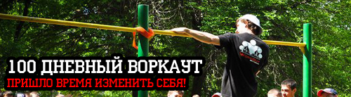
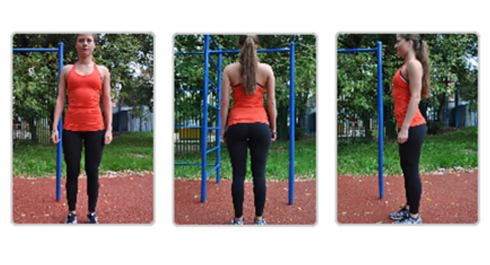
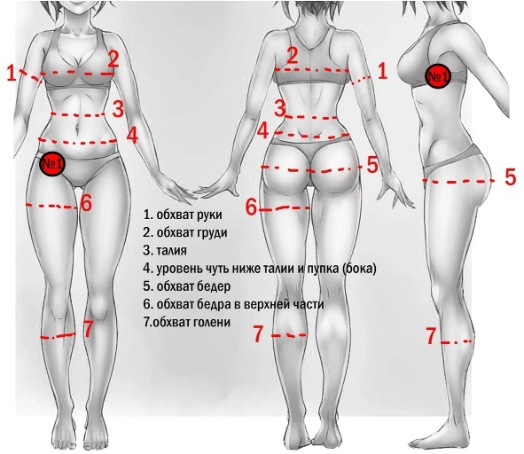

Today we will answer the most frequently asked questions about our program. If a question appears that is not answered below, you can always ask it in the app or in the community.
What should I do before starting the program?
1. Take photos from the front, from the back, and from both sides, in swimwear, on a plain background, in even natural light. Do not specially tense anything in the photos.

Seriously, if you do not do this now, at the end of the program you will be very sorry that you have no good Before and After photos to show off your progress.
2. Record a video of your current maxes in the basic exercises. We will break down how to do these exercises in detail in the first week of the program. For now, do the tests with clean technique: full-range pull-ups, full-range push-ups, and full-range squats.
That is the quality you need when you test your starting maxes before the program. Right before testing, do a good warm-up and 1–2 warm-up sets with a small number of reps (25% and 50% of your max). Many beginners worry that those sets will spend all their strength and they will not be able to go all out after that. In reality it is the opposite! These sets prepare the body for the coming load and let you do even more reps than without them!
It is best to start testing maxes with the hardest exercise — pull-ups. Then rest enough (until strength, breathing and a general feeling of freshness return) and do push-ups. And then, after rest, squats. But that is a general recommendation. The main thing is that when you later test your progress (in the middle and at the end of the program) you do the exercises exactly the same way as in the starting test, so extra factors do not affect the comparison.
3. Take measurements of weight and girths (neck, chest, biceps, waist, hips, thighs (both), forearms, calves). Weigh yourself in the morning on an empty stomach. Measure girths as in the picture below and in a relaxed state:

4. Decide on the goals you want inside this program. If possible, express them in concrete numbers. There will be a separate infopost about how to set goals effectively.
Are there any contraindications for going through the program?
Only the standard medical ones. We provide information only for educational purposes (as is), and all responsibility for participants’ health lies with them. So before you start, you must consult your doctor (preferably a sports doctor).
We want participants not just to follow instructions and do the tasks, but to learn to listen to their body. The body is the best source of feedback, so it is important to learn to speak with it in “one language” and understand its signals. Then you can not only avoid unpleasant injuries, but also progress much faster!
Will I need to buy any equipment, or is my body and a bar enough?
For the sessions you will need only your own body and a bar (or a substitute). Also think in advance about where and how the sessions will happen as the weather outside changes.
You can look for a suitable playground near home in your city. If outdoor sessions do not work because of the weather, a home bar and gloves for bars can help with grip and protect the hands from calluses.
Will I need to adjust my nutrition during the program?
Yes. You cannot get noticeable results with training alone. We will stop on this question in more detail in the third week of the program.
Can I replace exercise X with exercise Y in my sessions (for example, push-ups with dips)?
If this question appears, we would recommend starting the SOTKA program by the scheme we offer now. If later it turns out that the load is not enough, you can replace the exercises with harder versions. We will talk about this in more detail in the ADVANCED block of the program, including dips, and we will explain why they are NOT a replacement for regular push-ups. But everything in its time.
What if I cannot even do one pull-up?
In the BASIC block of the program there will be a detailed infopost about how to learn pull-ups from zero. For now you can use Australian pull-ups as an alternative.
Can I combine SOTKA with gym sessions or other kinds of training?
The sessions inside the program will take about 45 minutes a day. They are intense, but short, and to maximize their effect we would recommend moving more in the remaining 23 hours and 15 minutes too. You can walk stairs a bit more, park the car a bit farther from work and walk, take breaks every hour and warm up. These are all small actions, but their effect will accumulate!
As for combining SOTKA with other kinds of training, you have to try and watch how you feel. But in general, if a participant asks this question, they most likely still do not know the capabilities of their body and the level of their strength. And you can determine those only by experience.
What if doing some exercise causes pain?
Our main rule is we never do something that causes pain. NEVER. You do not need to endure pain, you do not need to do something through pain. If something starts to hurt, you need to STOP RIGHT AWAY. There will be a separate infopost about this in the BASIC block of the program.
Where will the sessions for beginners take place? How do I find out the start time?
Every day we will open infoposts with information and training tasks, so participants can do the program when and where it is convenient for them.
As for group meetups, while the weather outside allows, we recommend finding other participants of the program in your city and gathering on weekends to train together. In some cities we have Curators of the program who will hold weekly group sessions, and we will post all information about such sessions on the city pages and in the mobile apps.
What if I cannot train every day, or my work schedule does not allow it?
First of all you need to analyze the reasons why this happens. Our experience from previous launches shows that if you want to, anyone can find a little time for training. You should also remember that the main value of our program is in the daily posts and the knowledge we share with participants, not in the workouts.
The program has 1 day of full rest from training (you are free to choose any day of the week for this) and 1 unloading day (a warm-up/stretching day), which by default is assigned to the last day of the training week. You can also use the stretching day during the week when you cannot do a full session, so if you want, you can adapt the program to any schedule.
What if I miss several sessions for different reasons?
Nothing terrible will happen if for some reason you have to miss 1–2 days. Moreover, you can even keep going through the program. In case of a longer miss (2+ days) or serious reasons, we recommend returning to training from the load level at which you stopped. The program will have a separate infopost dedicated to returning after a break.
What if I get sick or injured?
First, in case of illness or injury (which interfere with your training) you NEED TO STOP training until you recover. Illness/injury is stress for your body, and you do not need to give it even more stress in the form of physical load.
Second, in this case you do not need to be sad! None of us is insured against such things, so you should treat them more calmly. SOTKA is not just 100 days, it is a way of life, and once you start training, it will already be hard to drop it. So you can calmly spend a little time recovering and return to training with fresh strength.
And you can also not waste the freed-up time: for example, read books, or study foreign languages, or learn musical instruments, and so on. In general, there are always plenty of ways to occupy yourself while you recover.
Can I put the training on pause?
You cannot put life on pause. That is part of our philosophy, which we want to share with the participants of the program. Unfortunately, a lot of people live as if they have several lives, or as if at any moment they can start over. But that is not so. Time does not stop for a moment and moves forward relentlessly, whether we like it or not. And it is very important to learn to value your time.
The days of the program will replace each other regardless of whether participants can train, but we specially added the options Illness and Rest in the Calendar for the most accurate display of the data.
Should I make reposts so more people learn about the program?
We will be very grateful for help in promoting the program on social networks and among friends. Our goal is that as many people as possible learn how you can become stronger, healthier and better looking without any financial costs!
The official hashtags of the program are #SOTKA and #моястодневка.